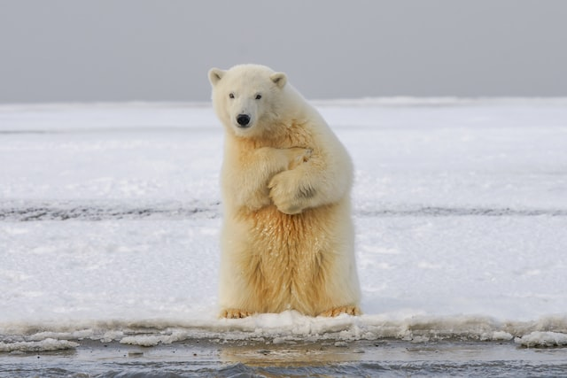
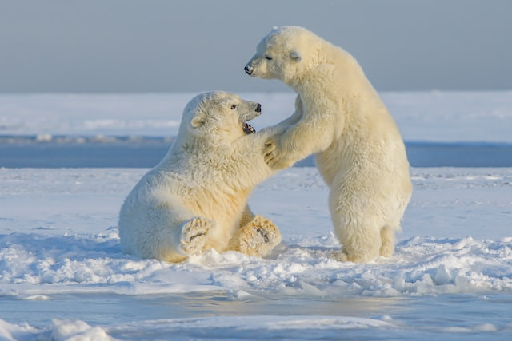
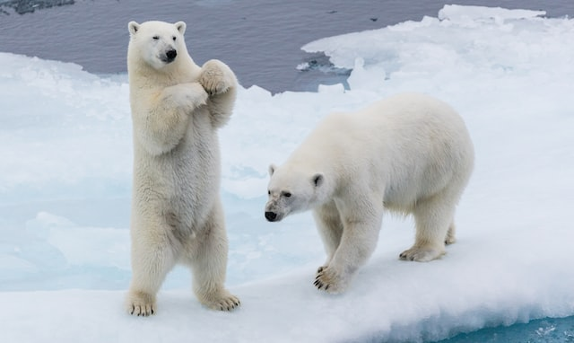

Polar Bears in Arctic sea

Polar Bear Cubs
Totally dependent on their moms, newborns are 30-35 centimeters long (12 to 14 in) and weigh little more than half a kilogram (1 lb). They’re blind, toothless, and covered with short, soft fur.
Read More

livelihood
Polar bears are forever linked to the Arctic sea ice, where they hunt their seal prey. The bears are found in five nations: the U.S. (Alaska), Canada, Russia, Greenland, and Norway (Svalbard).
Read More

Diet & Prey
Polar bears have evolved to prey on ringed and bearded seals, which they catch from a platform of sea ice. Polar bears depend on the high-fat content that seals provide, but will take other prey when available.
Read More